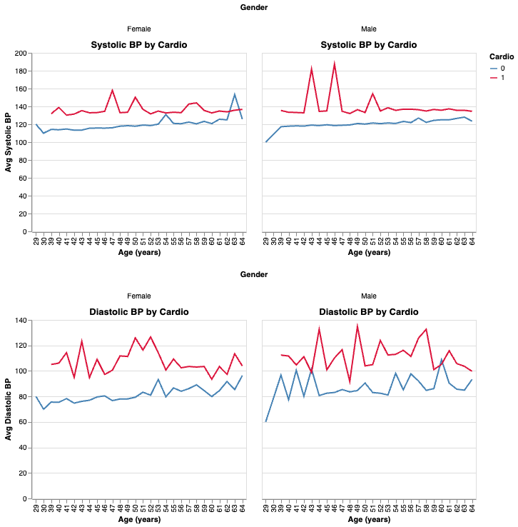

Goals and Objectives
Motivation: Cardiovascular disease is one of the world’s most significant health challenges. Understanding the key risk factors and demographic trends helps develop strategies to prevent disease. This dashboard bridges the gap in accessibility and visual analysis of cardiovascular data, providing insights for healthcare professionals, policymakers, and researchers.
Data Preview
A scrollable preview of the raw cardio_train.csv dataset.
Power BI Dashboard
Explore an interactive Power BI report directly within this dashboard.
Correlation Matrix
This heatmap shows pairwise Pearson correlations between all features in the dataset, ordered by their absolute correlation with the target cardio.
Top Positive Correlations vs. Cardio
Charts showing the two features most positively correlated with cardio: Age (in years) and Cholesterol levels.
Top Negative Correlations vs. Cardio
Charts showing the two features most negatively correlated with cardio: Smoke (0 = nonsmoker, 1 = smoker) and Active (0 = not active, 1 = active).
Interactive Chart: Age vs. BP by Cardio Type
Scroll or pinch to zoom, drag to pan, and hover for details. Point size = weight, color = cardio status.
Red dots (cardio = 1) sit higher on the y‑axis than blue dots (cardio = 0), showing that patients with cardiovascular disease have consistently higher systolic blood pressure across all ages—especially between 45 and 60 years. The larger circle sizes (weight) also cluster among reds, highlighting that higher body mass often coincides with both elevated BP and disease status.
Cholesterol Levels by Gender & Cardio Status
Stacked bar chart of cholesterol distributions by gender and cardio diagnosis.

Blood Pressure Trends by Age, Gender, and Cardio Status
This panel shows how average systolic (top row) and diastolic (bottom row) blood pressures evolve with age for patients with (red) and without (blue) cardiovascular disease, separately for females (left column) and males (right column).
You can see that at nearly every age, both systolic and diastolic pressures are higher in the cardio‑positive group. The gap is especially pronounced in mid‑life (ages ~44–50), and shows slightly different patterns for men versus women. This suggests that elevated blood pressure is strongly associated with cardiovascular disease across the adult lifespan.
